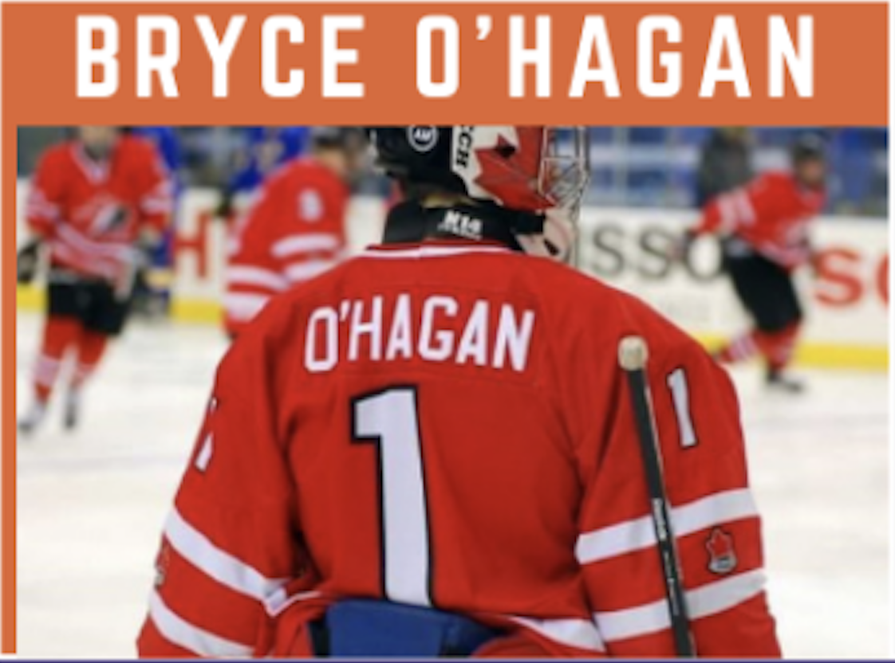

<div>
    <table style="border-style: none;">
        <tr>
            <td>
            </td>
            <td>
                <div style="font-family: Arial; font-size: 18px; color: rgb(54, 96, 146);">
                    <p>Bryce O’Hagan is a highly skilled goalie, winning Gold with Team Canada U18 in 2008-2009, Gold
                        with Team Ontario U17 2007-2008, and receiving the CIS All Canadian Rookie for his 2012-2013
                        season. He was drafted in the 3rd round for the Soo Greyhounds where he played for 3 seasons,
                        and 1 more in the OHL with the Peterborough Pets.</p>

                        <p>Bryce now owns and operates “O’Hagan Goaltending”. He specializes in building a foundation of
                        skills while teaching to each individual goalies’s size and ability. He has an exceptional work
                        ethic and an eye for detail.</p>

                    </p>
                    <a href="https://ohagangoaltending.com" target="_">ohagangoaltending.com</a>


                </div>
            </td>
        </tr>

    </table>

</div>